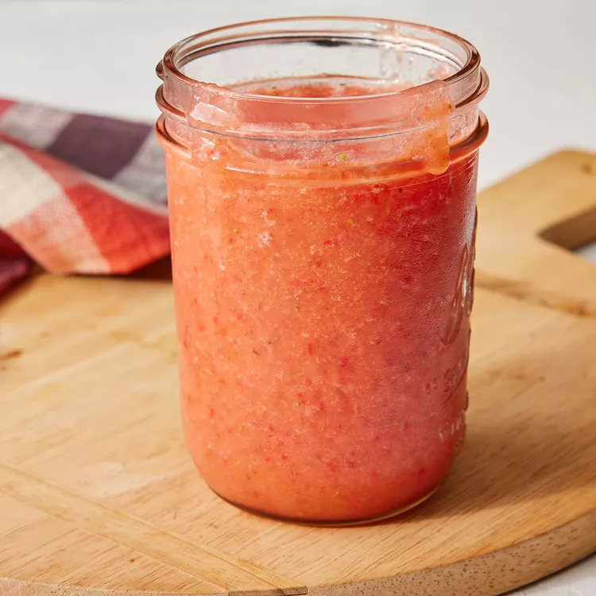

Basic Fruit smoothie
Fruit smoothie

This is a great fruit smoothie recipe consisting of fruit, fruit juice, and ice. I like to use whatever fresh fruits I crave that day... Berries, mangos, papayas, kiwi fruit, etc. Experiment with your favorites!
Ingredients
- 1 quart strawberries,hulled
- 2 fresh peaches-peeled,pitted and sliced
- 1 banana, broken into chunks
- 2 cups ice
- 1 cup orange-peach-mango juice
Steps
- Combine strawberries, peaches, and banana in a blender; blend until smooth. Add ice and pour in juice; blend again to desired consistency.